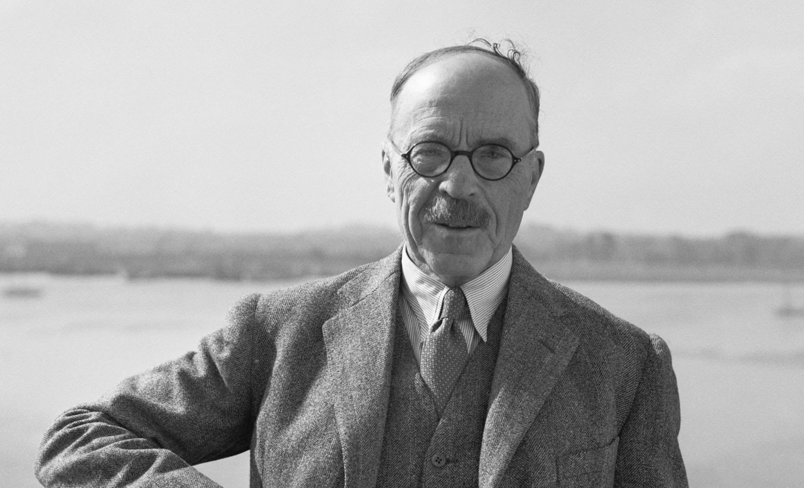
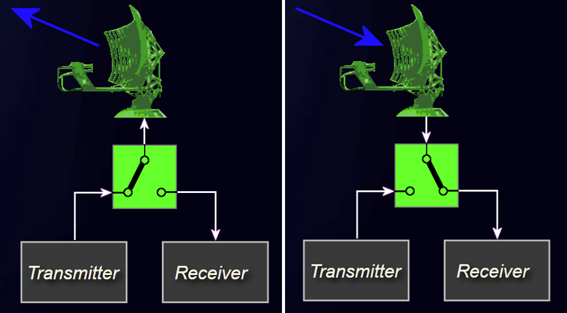
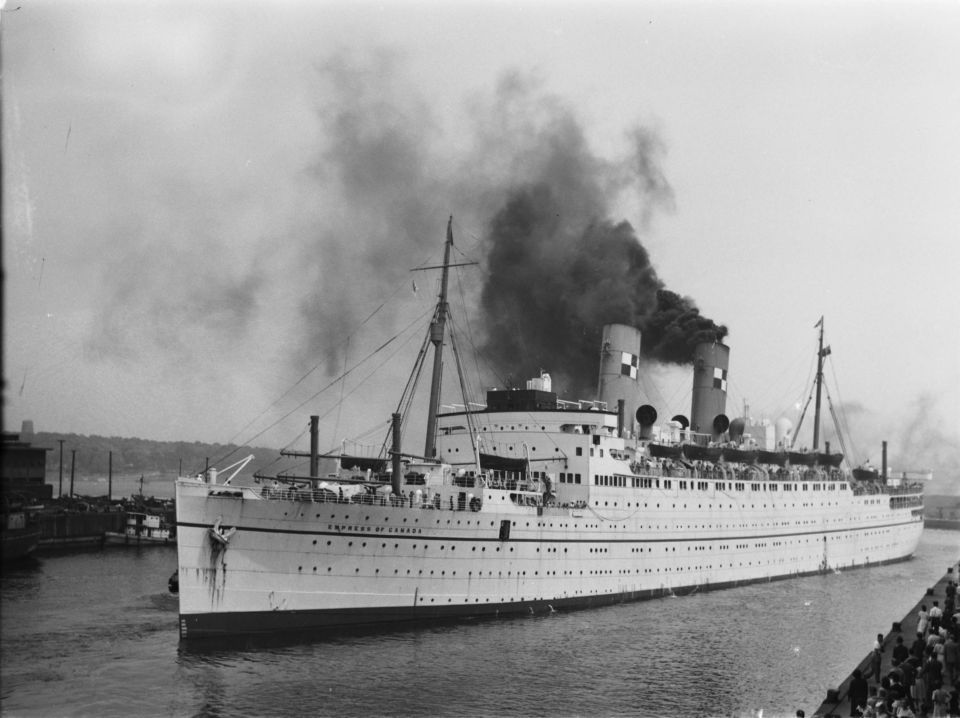

레이더 개발 이야기 (21) - 건국 이래 가장 귀중한 화물
게시: 2023-02-16T06:30:24+09:00
<기술을 퍼주자고? 뭔 개솔휘야?> 과거의 전쟁은 더 많은 병력과 보급품, 더 강한 용기와 투지를 가진 측이 무조건 승리. 그러나 WW2에 들어서면서 기술적 진보가 그런 것을 뛰어넘을 수 있다는 것이 점점 드러남. 이 와중에 WW2 개전 초기 유럽 전체를 장악한 나찌 독일에 맞서 싸우던 영국은 기술적 우위에 대해서는 어느 정도 자신이 있었으나, 그걸 활용하기 위해서는 미국의 생산능력이 절실히 필요하다는 것을 느끼고 있었음. 하지만 당시 미국은 고립주의에 입각하여 여전히 중립. 아무리 WW1 때 같은 편이었고 같은 언어와 문화를 공유한다고 해도, 전쟁은 피가 흐르고 내장이 터져나가는 끔찍한 사건. 거기에 미국을 끌어들이기 위해서는 특단의 조치가 필요했음. WW1 때부터 국방 기술 분야에서 일했고, 우리가 오늘날 옥탄가(octane ratings)라고 부르는 개념을 정립했으며, 당시 Aeronautical Research Committee, 즉 방공 과학 조사위 의장을 맡고 있던 화학자 Henry Tizard는 이 상황을 타개하기 위해 획기적인 아이디어를 냄. 당시 영국이 극비로 취급하고 있던 각종 국방 기술을 그냥 그대로 미국에 퍼주자는 것. 그렇게 할 경우 미국도 마음의 문을 열고 자신의 기술을 개방하고 추가 개발 및 대량 생산을 위한 협력의 길이 열릴 것이라고 티저드는 주장. 그러나 처칠 수상, 그리고 공군 레이더 개발을 지휘하던 Robert Watson-Watt은 전례없는 이런 접근방식에 반대. 그러나 1차 사절로 미국을 방문하여 분위기를 떠본 방공 과학 조사위 회원인 Archibald Hill은 분위기가 나쁘지 않다고 보고. 결국 1940년 9월, 일단의 영국 과학자들과 군인들이 흔히 Tizard Mission이라고 불렸던 사절단으로 미국으로 건너감. 이들이 가져간 기술은 대부분 문서였는데, 금속제 공문서 보관함에 밀봉된 이 문서들에는 Chain Home 레이더, cavity magnetron, 전파 센서 근접 신관 (proximity VT fuze), Whittle 제트 엔진, 항공기 엔진 과급기(supercharger), 잠수함 탐지 장치, 자가 밀봉 연료 탱크, 플라스틱 폭탄 등의 구체적, 혹은 개념적 설계도가 있었고, 원자폭탄의 기본 구상까지도 들어있었음. 흔히 원자폭탄이나 제트 엔진이 가장 주목을 받았을 거라고 생각했지만 아니었음. 이 사절단은 미국의 Enrico Fermi까지 만나 원자폭탄에 대해 설명했지만 당시 핵분열로 발전용 수증기를 만들 생각을 하던 페르미의 반응은 심드렁. 당시엔 아직 우라늄 235를 분리할 기술이 없었으므로 사실 영국 측 입장도 그냥 가능성이 있다는 정도. 제트 엔진도 이 사절단이 가져간 문서는 그렇게까지 구체적이지 않았고 또 미국인들도 제트 엔진 연구를 하고 있었으므로 양측 반응은 그냥 탐색전 정도로 끝남. 결과적으로 미국 국방성의 마음을 활짝 열어젖힌 것은 바로 캐버티 마그네트론. 이 간단한 전자장치가 정말 WW2에서 연합군을 승리로 이끌었다고 해도 과언이 아니었음. 항공전 뿐만 아니라 대서양에서의 U-boat 사냥에도 결정적인 승리의 기초를 제공했기 떄문. ** 사진은 헨리 티저드. 원래 해군 장교 집안에서 태어나 본인도 해군 장교가 되려 했으나 보시다시피 시력이 나빠 대신 화학자가 됨. 티저드 사절단의 성공적 수행으로 전쟁 승리에 크게 공헌했으나 미국에서 돌아와 보니 자기 자리 없어지고 실업자가 되었음.

<건국 이래 미국에 도착한 것들 중 가장 귀중한 화물> 1940년 9월 영국의 극비 국방 기술 문서를 들고 미국으로 건너간 영국 군인/과학자들의 심정은 복잡 미묘. 영미 양측은 그때까지 서로의 군사 기밀을 절대 공유하지 않는 사이였으므로 서로의 기술적 진보에 대해 깜깜이 상태. 당시 사절단은 (1) 우리가 너무 많은 것을 양키들에게 퍼주는 것 아닐까? 라는 생각과 (2) 우리가 애지중지하던 기밀에 대해 양키놈들이 '니들 수준이 고작 그 정도였냐' 라고 비웃으면 어떡하지? 라는 생각이 공존. 이 사절단과 미국 인력들과의 초기 회담은 양측 모두의 이런 생각 때문에 무척이나 조심스럽고 서로 간보는 분위기가 역력. 결과적으로는 앞서 언급한 대로, 제트 엔진과 원자탄에 대해서 미국측 반응은 그냥 미적지근. 그러나 영국인들의 진정성에 대해 의심쩍어하는 미국인들의 마음을 그냥 때려부수고 활짝 연 것은 cavity magnetron. 일단 영국이 야심차게 시시콜콜한 세부안까지 모조리 공개한 Chain Home 레이더망에 대해서는 영미 양측이 다 깜짝 놀랐음. 미국인들은 영국인들이 이렇게 자세한 내용을 공개한 것에 대해 놀라고 감명을 받았으며, 그 답례로 미해군이 개발한 CXAM 레이더 기술을 그대로 공개했는데 영국인들도 미국이 완전히 독자적으로 개발한 레이더가 기술적으로는 영국 것과 거의 동일한 결과물이 된 것을 보고 깜놀. (무협지에 자주 나오는 코멘트 "역시 영웅호걸들은 안목이 비슷하구나!") 미해군의 기술이 영국 공군 것보다 앞선 것도 있었음. 영국 공군의 Chain Home 레이더는 송신 안테나와 수신 안테나가 분리되어 있었고, 그걸 그대로 본받은 영국 해군도 같은 방식이었음. 이렇게 송수신 안테나를 따로 두어야 했으므로 특히 영국 해군은 좁은 군함의 공간 활용 측면에서 성가셨는데, 미해군은 똑같은 문제에 봉착하자 duplexer라는 장치를 만들어 극히 짧은 송신 pulse를 보낸 뒤 순간적으로 수신 채널로 안테나를 돌려 그 반사파를 수신하고, 다시 짧은 송신 펄스를 보내는 방식으로 하나의 안테나에서 송수신을 모두 처리한 것 (사진1).

그러나 이런 사소한 것이 중요한 것이 아니었음. 결과물이 똑같다는 것은 미국인들도 영국인들과 똑같은 문제, 즉 미터 단위의 긴 파장의 전파로 인한 각종 문제에 시달리고 있었고 돌파구를 못 만들고 있었다는 뜻임. 그런데 여기에 대해 영국의 공대공 레이더 전문가인 Edward George Bowen이 캐버티 마그네트론을 내놓음. 특히 보웬은 다른 기술들과는 달리 문서만 들고 간 것이 아니라 캐버티 마그네트론 실물을 들고 대서양을 건넜고, 따라서 그걸 이용한 실험까지 해보일 수 있었음. 이 테스트를 본 미국인들은 그야말로 입이 떡 벌어짐. 미국 과학연구개발청의 공식 역사가인 James Phinney Baxter 3세는 이 캐버티 마그네트론에 대해 "건국 이래 해외에서 들어온 화물 중에서 가장 귀중한 화물"이라고 평가. 다만 이렇게 소중한 화물은 나름 우여곡절을 거쳐 미국에 도착. 젊은 보웬은 영국 런던에서 출발하기 전에 이 캐버티 마그네트론 시제품을 본인 호텔방에 보관하고 있었고, 리버풀로 가는 기차역에 갈 때도 이 극비 화물을 그냥 택시 지붕에 끈으로 묶어서 얹은 채 이동. 그런데 런던 기차역에서 수화물 취급 과정에서 보웬은 잠깐이지만 이 극비 화물을 분실. 혼쭐이 난 보웬은 리버풀부터는 군부대의 호위를 받으며 이동. 이 티저드 사절단과 기밀 문서, 그리고 캐버티 마그네트론은 어떻게 대서양을 건넜을까? 티저드 본인은 사전 조율을 위해 항공기로 (아마도 아이슬란드와 캐나다 북쪽에 중간 기착하며) 대서양을 건넜으나 사절단 본대는 선박편, 그것도 고속 순양함이 아닌 그냥 캐나다 여객선인 Duchess of Richmond 호 (사진2, 2만톤, 18노트, 1928년 진수)를 타고 건넘.

그런데 더 짧은 파장의 전파를 강력하게 쏠 수 있는 캐버티 마그네트론이 왜 그렇게 WW2의 향방에 중대한 영향을 끼쳤다고 하는 것일까? 그건 바로 U-boat 때문. 이 이야기는 보웬이 공대공 레이더를 만든답시고 온갖 삽질을 반복하던 1937년으로 거슬러 올라감.